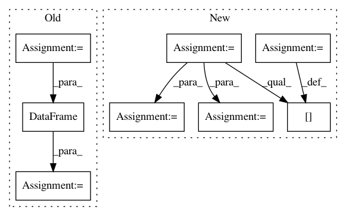

f49809322491c857d435bb12f5de7b09aac2d181,linearmodels/panel/data.py,PanelData,mean,#PanelData#Any#Any#,378
Before Change
w = w * np.isfinite(v)
wv = w * v
mu = np.nansum(wv, axis=axis)
mu /= np.nansum(w, axis=axis)
index = self.panel.minor_axis if group == "entity" else self.panel.major_axis
out = DataFrame(mu.T, index=index, columns=self.vars)
reindex = self.entities if group == "entity" else self.time
out = out.loc[reindex]
return out
After Change
else:
w = weights.values2d
frame = self._frame.copy()
frame = w * frame
weighted_sum = frame.groupby(level=level).sum()
frame.iloc[:, :] = w
sum_weights = frame.groupby(level=level).sum()
mu = weighted_sum / sum_weights
reindex = self.entities if group == "entity" else self.time
out = mu.loc[reindex]
In pattern: SUPERPATTERN
Frequency: 3
Non-data size: 8
Instances
Project Name: bashtage/linearmodels
Commit Name: f49809322491c857d435bb12f5de7b09aac2d181
Time: 2017-04-14
Author: kevin.k.sheppard@gmail.com
File Name: linearmodels/panel/data.py
Class Name: PanelData
Method Name: mean
Project Name: bashtage/linearmodels
Commit Name: 5d8b81e16143d6eea9e86a586fe737854c03c772
Time: 2017-04-07
Author: kevin.k.sheppard@gmail.com
File Name: linearmodels/tests/panel/test_pooled_ols.py
Class Name:
Method Name: test_two_way_clustering
Project Name: NTMC-Community/MatchZoo
Commit Name: a871536bcbb38b9ca03b0bc777712d8c0a79ad90
Time: 2018-12-13
Author: i@uduse.com
File Name: matchzoo/data_pack/pack.py
Class Name:
Method Name: pack